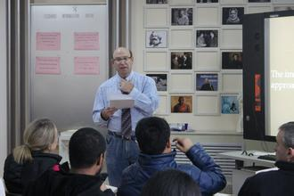

切记在外教老师招聘上切不可大意

招聘什么样的外教老师？一般我们认为外籍教师最好是Native Speaker，相对来讲，他们在发音，用词，俚语操控方面,要比非
What kind of teacher recruitment? In general, we think that foreign teachers are the best Speaker Native, relatively speaking, they are pronunciation, with words, slang manipulation, to non
Native Speaker强很多。但是Native Speaker并不能作为聘请外教的唯一准则www.fltacn.com以英语教学为例，英语教学也是一门艺术，目前英语教学比较好的交互式沟通教学方式更为适合外向的、善于人际互动的老师来发挥。事实上在Native Speaker中也有一部分是比较木讷和内向的。因此外教聘请过程中，对外教老师的选择是十分重要的。
Speaker Native strong a lot. But native speaker and not as to hire foreign teachers for the only criterion www.fltacn.com to the teaching of English for example, the English teaching is a kind of art, the current English teaching better communicate interactive teaching method is more suitable for outgoing, be good at interpersonal interaction of teacher to play. In fact, in the Native Speaker part is also a relatively stiff and introverted. Therefore, in the course of foreign teachers, foreign teachers to teach the choice is very important.
让外籍教师融入学校而不是把外教老师“嵌入”到学校！招聘外教是要让外教老师利用其自身的本族语优势，带动起本校的外语教学，外籍教师与本国老师的交流和互动也是非常重要的。1990年前后香港政府曾大量引进英语外籍教师，但由于外教老师对当地教育体制的不适应,缺乏与本地老师的互动,以及对本地文化和学生的不了解，这项外籍教师引进计划事实上是并不成功的。
Let foreign teachers into the school instead of the teacher "embedded" to the school!Recruitment of foreign teachers is to let the teachers take advantage of their native language and driven from the school of foreign language teaching, foreign teachers and their teacher's communication and interaction is also very important. In 1990, before and after the Hong Kong government was the introduction of a large number of foreign teachers of English, but due to the foreign teacher of the local education system does not adapt, lack and local teacher interaction, and on the local culture and the students do not understand, the foreign teacher introduction plan is, in fact, success is not the.
有效缓解和遏制英语教学的“双峰现象”！以目前国内的英语教学来看，总体状况是“考试能力很强、读写能力一般、听说能力很低”！如何通过引进外籍教师来提高学校英语教学的总体水平，是一个不小的课题。
"Shuangfeng phenomenon" in the effective mitigation and containment of English teaching"! At present, the overall situation of English Teaching in China is "the examination ability is very strong, the ability of reading and writing is general, and the listening and speaking ability is very low"! How to improve the overall level of College English teaching by introducing foreign teachers is a no small task.
聘请外教老师，为“面子”还是真正需求？学校有外籍教师固然有“面子”，但高质量的英语教学水平才是学校真正的竞争力。我们是招聘外教的专家，在提升学校形象和学校外语教学竞争力上有着丰富的经验。
To hire foreign teachers, as "face" or real needs? Although there are foreign teachers in the school "face", but the quality of English teaching level is the real competitiveness of the school. We are experts in the recruitment of foreign teachers, to enhance the image of the school and the competitiveness of foreign language teaching in schools has a wealth of experience.
每一个学校的外教聘请计划都被我们视作一个独立的项目（Project）来进行！针对不同的学校，我们有着不同的、具有针对性的外籍教师解决方案。幼儿园需要的儿童外教和少儿外教应该亲切和蔼，颇具亲和力，教学方法活泼生动，能吸引小孩子；中小学招聘外教则重在英语（外语）教学上，尤其是听力和口语的教学，让外籍教师融入中国的环境，与本地的英语教师形成互动则是聘外教的关键；大中专院校招聘外教老师则更多地要让外籍教师在外国文化、外语写作和阅读、外语听说能力等教学方面发挥优势。
Each school's foreign teacher hiring plan is treated as an independent project (Project)! For different schools, we have different, targeted foreign teachers solutions.Kindergarten needs of foreign teachers and the children's children teachers should be kind, quite friendly and lively teaching methods, to attract children; primary and secondary school teachers recruitment is focusing on English learning and teaching, especially the teaching of listening and speaking, let foreign teachers into the Chinese environment, and the local English teachers interact is key to hire foreign teachers, colleges and universities recruitment of foreign teachers is more to let the foreign teachers in a foreign culture, foreign language writing and reading, listening and speaking ability, teaching advantage.